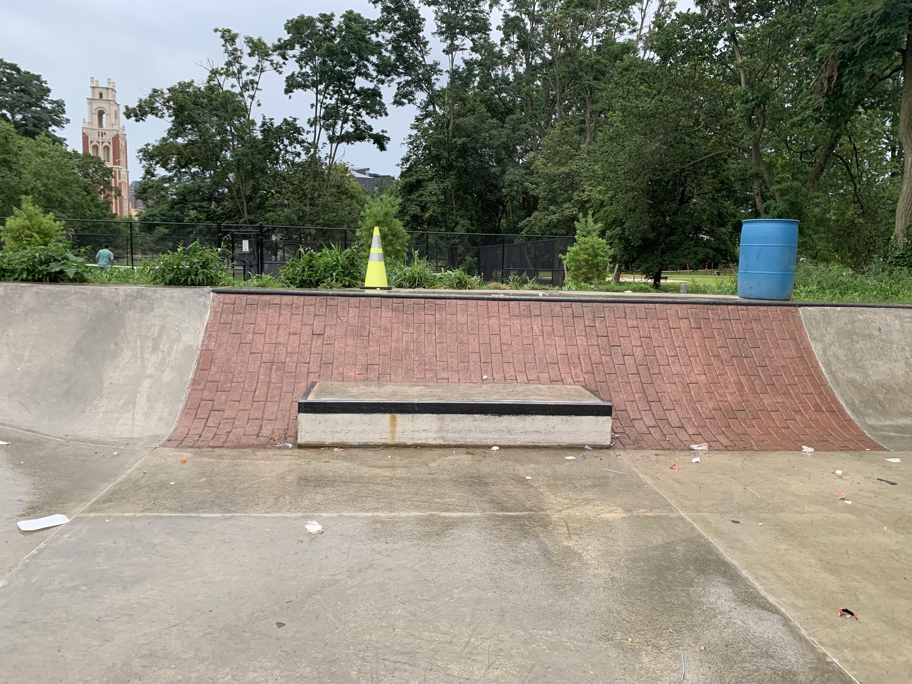

Lego block
The block is a short slab of concrete on the back of the skate park with metal plates on the corners. The slab is slightly taller than the average curb but it is still great for practicing your Ollies once you feel like you’re getting comfortable with getting over curbs. You can also learn to be more comfortable on the board by going over the half pipe and turning onto the block.
The Courts
The skate park is also just a part of a larger normal park that has two basketball courts and two tennis courts. These open areas are great for flat ground tricks and more importantly, for being more comfortable on your board. I sometimes do laps around the basketball courts as fast as I can which is a great drill for building up a good understanding for board foot placement.
 Previous page
Flip page
Previous page
Flip page